Frequency and Time Frequency analysis
Here we do frequency analysis to visual data. We first reject trials with high frequency noise (muscles). Next we correct MOG (eye movement artifact). After cleaning we perform frequency analysis and then time frequency analysis. The data we use is already after heartbeat correction.
Contents
- Reject high frequency noise trials (muscle artifact)
- Clean MOG by PCA, find Up-Down component
- Clean MOG by PCA, find L-R component
- Now you clean the data of MOG
- Check if there are bad trials left
- Frequency analysis
- Time-Frequency analysis
- Window size effect
- 3 cycles per windows
- 7 cycles per windows
- 1 cycle, all channels
- Normalization
- Within subject (between trials) statistics.
reject high frequency noise trials (muscle artifact)
here we read the data with a 60Hz high pass filter we take a large window because of the sliding windows for low freqs
cd somsens fileName='hb_c,rfhp0.1Hz'; cfg=[]; cfg.dataset=fileName; cfg.trialdef.eventtype='TRIGGER'; cfg.trialdef.prestim=0.5; cfg.trialdef.poststim=1; cfg.trialdef.offset=-0.5; %NOTE large baseline to measure low freq cfg.trialdef.visualtrig= 'visafter'; cfg.trialfun='BIUtrialfun'; cfg.trialdef.eventvalue= [222 230 240 250]; cfg=ft_definetrial(cfg); cfg.demean='yes'; cfg.baselinewindow=[-0.5 0]; cfg.channel='MEG'; cfg.padding=0.1; cfg.feedback='no'; dataorig=ft_preprocessing(cfg); cfg=[]; cfg.method='summary'; cfg.channel='MEG'; cfg.alim=1e-12; cfg1.hpfilter='yes'; cfg1.hpfreq=60; %SEE? dataNoMscl=ft_rejectvisual(cfg, dataorig); % data high freq reject visual % reject bad trials
evaluating trialfunction 'BIUtrialfun'
reading header...
applying digital weights in the gradiometer balancing matrix
undoing the Supine balancing
reading events from file...
applying digital weights in the gradiometer balancing matrix
undoing the Supine balancing
found 894 events
created 160 trials
the call to "ft_definetrial" took 3 seconds and an estimated 0 MB
applying digital weights in the gradiometer balancing matrix
undoing the Supine balancing
processing channel { 'A22' 'A2' 'A104' 'A241' 'A138' 'A214' 'A71' 'A26' 'A93' 'A39' 'A125' 'A20' 'A65' 'A9' 'A8' 'A95' 'A114' 'A175' 'A16' 'A228' 'A35' 'A191' 'A37' 'A170' 'A207' 'A112' 'A224' 'A82' 'A238' 'A202' 'A220' 'A28' 'A239' 'A13' 'A165' 'A204' 'A233' 'A98' 'A25' 'A70' 'A72' 'A11' 'A47' 'A160' 'A64' 'A3' 'A177' 'A63' 'A155' 'A10' 'A127' 'A67' 'A115' 'A247' 'A174' 'A194' 'A5' 'A242' 'A176' 'A78' 'A168' 'A31' 'A223' 'A245' 'A219' 'A12' 'A186' 'A105' 'A222' 'A76' 'A50' 'A188' 'A231' 'A45' 'A180' 'A99' 'A234' 'A215' 'A235' 'A181' 'A38' 'A230' 'A91' 'A212' 'A24' 'A66' 'A42' 'A96' 'A57' 'A86' 'A56' 'A116' 'A151' 'A141' 'A120' 'A189' 'A80' 'A210' 'A143' 'A113' 'A27' 'A137' 'A135' 'A167' 'A75' 'A240' 'A206' 'A107' 'A130' 'A100' 'A43' 'A200' 'A102' 'A132' 'A183' 'A199' 'A122' 'A19' 'A62' 'A21' 'A229' 'A84' 'A213' 'A55' 'A32' 'A85' 'A146' 'A58' 'A60' 'A88' 'A79' 'A169' 'A54' 'A203' 'A145' 'A103' 'A163' 'A139' 'A49' 'A166' 'A156' 'A128' 'A68' 'A159' 'A236' 'A161' 'A121' 'A4' 'A61' 'A6' 'A126' 'A14' 'A94' 'A15' 'A193' 'A150' 'A227' 'A59' 'A36' 'A225' 'A195' 'A30' 'A109' 'A172' 'A108' 'A81' 'A171' 'A218' 'A173' 'A201' 'A74' 'A29' 'A164' 'A205' 'A232' 'A69' 'A157' 'A97' 'A217' 'A101' 'A124' 'A40' 'A123' 'A153' 'A178' 'A1' 'A179' 'A33' 'A147' 'A117' 'A148' 'A87' 'A89' 'A243' 'A119' 'A52' 'A142' 'A211' 'A190' 'A53' 'A192' 'A73' 'A226' 'A136' 'A184' 'A51' 'A237' 'A77' 'A129' 'A131' 'A198' 'A197' 'A182' 'A46' 'A92' 'A41' 'A90' 'A7' 'A23' 'A83' 'A154' 'A34' 'A17' 'A18' 'A248' 'A149' 'A118' 'A208' 'A152' 'A140' 'A144' 'A209' 'A110' 'A111' 'A244' 'A185' 'A246' 'A162' 'A106' 'A187' 'A48' 'A221' 'A196' 'A133' 'A158' 'A44' 'A134' 'A216' }
the call to "ft_preprocessing" took 5 seconds and an estimated 0 MB
the input is raw data with 248 channels and 160 trials
showing a summary of the data for all channels and trials
computing metric [--------------------------------------------------------\]
145 trials marked as GOOD, 15 trials marked as BAD
248 channels marked as GOOD, 0 channels marked as BAD
the following trials were removed: 1, 11, 25, 33, 39, 44, 70, 74, 81, 87, 90, 95, 108, 109, 115
the call to "ft_rejectvisual" took 11 seconds and an estimated 0 MB
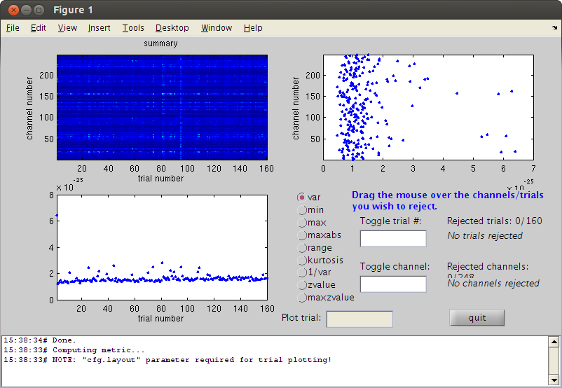
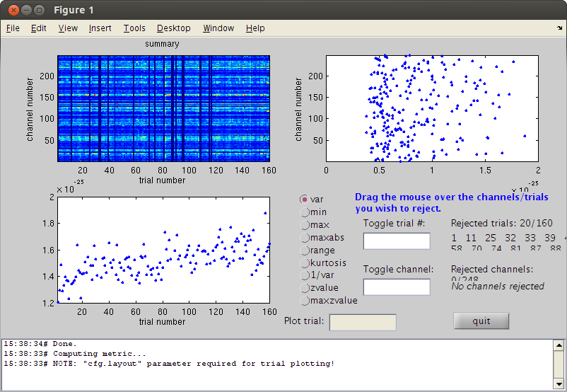
clean MOG by PCA, find Up-Down component
first clear some memory
clear dataorig trig=readTrig_BIU(fileName); trig=clearTrig(trig); % up-down eye movement startt=find(trig==50,1)/1017.25; %877.4451 endt=find(trig==52,1)/1017.25; %886.3406 cfg2=[]; cfg2.dataset=fileName; cfg2.trialdef.beginning=startt; cfg2.trialdef.end=endt; cfg2.trialfun='trialfun_raw'; % the other usefull trialfun we have are trialfun_beg and trialfun_BIU cfg=ft_definetrial(cfg2); cfg.demean='yes';% old version was: cfg1.blc='yes'; %cfg1.baselinewindow=[-0.1,0]; cfg.lpfilter='yes'; cfg.lpfreq=40; cfg.channel='MEG'; MOGud=ft_preprocessing(cfg); % left right eye movement startt=find(trig==52,1)/1017.25; endt=find(trig==54,1)/1017.25; cfg2.trialdef.beginning=startt; cfg2.trialdef.end=endt; cfg=ft_definetrial(cfg2); cfg.demean='yes';% old version was: cfg1.blc='yes'; %cfg1.baselinewindow=[-0.1,0]; cfg.lpfilter='yes'; cfg.lpfreq=40; cfg.channel='MEG'; cfg.feedback='no'; MOGlr=ft_preprocessing(cfg); cfg=[]; cfg.method='pca'; compMOGud = ft_componentanalysis(cfg, MOGud); compMOGlr = ft_componentanalysis(cfg, MOGlr); % see the components and find the HB and MOG artifact % remember the numbers of the bad components and close the data browser cfg=[]; cfg.layout='4D248.lay'; cfg.channel = 1:5; cfg.continuous='yes'; cfg.event.type=''; cfg.event.sample=1; cfg.blocksize=3; ft_databrowser(cfg,compMOGud); close
Warning: 50Hz cleaning with cleanMEG pack will not be possible using the new trigger
evaluating trialfunction 'trialfun_raw'
reading header...
Warning: READ_HEADER is only a compatibility wrapper, which will soon be removed. Please instead
call FT_READ_HEADER.
applying digital weights in the gradiometer balancing matrix
undoing the Supine balancing
found 1 events
created 1 trials
the call to "ft_definetrial" took 1 seconds and an estimated 0 MB
applying digital weights in the gradiometer balancing matrix
undoing the Supine balancing
processing channel { 'A22' 'A2' 'A104' 'A241' 'A138' 'A214' 'A71' 'A26' 'A93'
reading and preprocessing
reading and preprocessing trial 1 from 1
the call to "ft_preprocessing" took 1 seconds and an estimated 0 MB
evaluating trialfunction 'trialfun_raw'
reading header...
Warning: READ_HEADER is only a compatibility wrapper, which will soon be removed. Please instead
call FT_READ_HEADER.
applying digital weights in the gradiometer balancing matrix
undoing the Supine balancing
found 1 events
created 1 trials
the call to "ft_definetrial" took 1 seconds and an estimated 0 MB
applying digital weights in the gradiometer balancing matrix
undoing the Supine balancing
processing channel { 'A22' 'A2' 'A104' 'A241' 'A138' 'A214' 'A71' 'A26' 'A93'
the call to "ft_preprocessing" took 1 seconds and an estimated 0 MB
the input is raw data with 248 channels and 1 trials
selecting 248 channels
baseline correcting data
scaling data with 1 over 0.000000
concatenating data.
concatenated data matrix size 248x9050
starting decomposition using pca
applying the mixing matrix to the sensor description
the call to "ft_componentanalysis" took 0 seconds and an estimated 0 MB
the input is raw data with 248 channels and 1 trials
selecting 248 channels
baseline correcting data
scaling data with 1 over 0.000000
concatenating data.
concatenated data matrix size 248x11287
starting decomposition using pca
applying the mixing matrix to the sensor description
the call to "ft_componentanalysis" took 0 seconds and an estimated 0 MB
reading layout from file 4D248.lay
the call to "ft_prepare_layout" took 1 seconds and an estimated 0 MB
the input is component data with 248 components and 248 original channels
detected 0 visual artifacts
redrawing with viewmode component
fetching data... done
fetching artifacts... done
preprocessing data... done
the call to "ft_prepare_layout" took 0 seconds and an estimated 0 MB
plotting artifacts...
plotting events...
plotting data...
the call to "ft_prepare_layout" took 0 seconds and an estimated 0 MB
plotting component topographies...
done
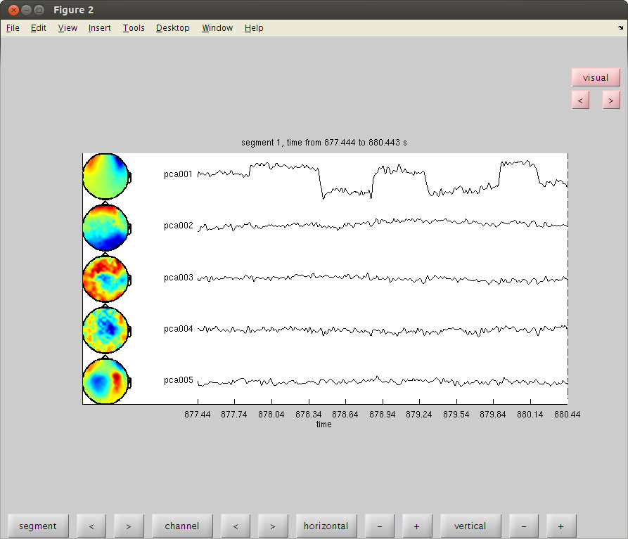 clean MOG by PCA, find L-R component
ft_databrowser(cfg,compMOGlr);
% remember the component number for up-down and for left-right MOG. we'll
close
reading layout from file 4D248.lay the call to "ft_prepare_layout" took 1 seconds and an estimated 0 MB the input is component data with 248 components and 248 original channels detected 0 visual artifacts redrawing with viewmode component fetching data... done fetching artifacts... done preprocessing data... done the call to "ft_prepare_layout" took 0 seconds and an estimated 0 MB plotting artifacts... plotting events... plotting data... the call to "ft_prepare_layout" took 0 seconds and an estimated 0 MB plotting component topographies... done 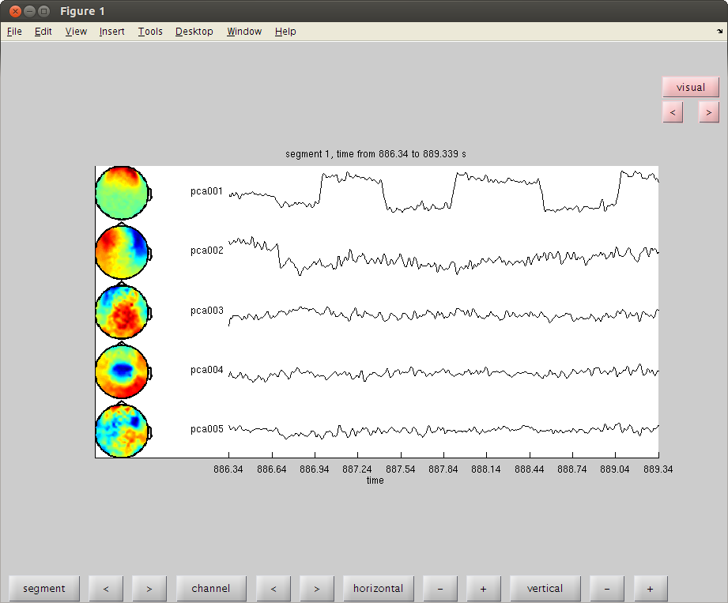
now you clean the data of MOG
set the bad comps as the value for cfgrc.component.
cfg = []; cfg.component = 1; % change cfg.feedback='no'; dataca = ft_rejectcomponent(cfg, compMOGud,dataNoMscl); cfg.component = 1; % change dataca = ft_rejectcomponent(cfg, compMOGlr,dataca); % clear the workspace a little. clear dataNoMscl comp* MOG* trig cfg* endt startt
baseline correcting data removing 1 components keeping 247 components the call to "ft_rejectcomponent" took 9 seconds and an estimated 0 MB baseline correcting data removing 1 components keeping 247 components the call to "ft_rejectcomponent" took 8 seconds and an estimated 0 MB
check if there are bad trials left
cfg=[]; cfg.method='summary'; %trial cfg.channel='MEG'; cfg.alim=1e-12; datacln=ft_rejectvisual(cfg, dataca); clear dataca
the input is raw data with 248 channels and 145 trials showing a summary of the data for all channels and trials computing metric [--------------------------------------------------------\] 144 trials marked as GOOD, 1 trials marked as BAD 248 channels marked as GOOD, 0 channels marked as BAD the following trials were removed: 52 the call to "ft_rejectvisual" took 10 seconds and an estimated 0 MB 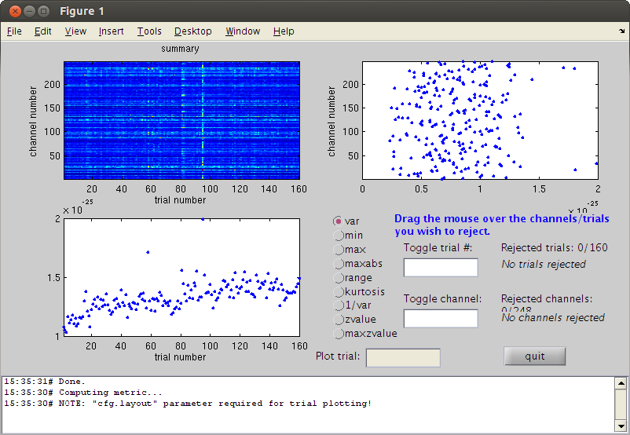
frequency analysis
cfgfr=[]; %cfgfr.trials=find(datacln.trialinfo==222); cfgfr.output = 'pow'; cfgfr.channel = 'MEG'; cfgfr.method = 'mtmfft'; cfgfr.taper = 'hanning'; cfgfr.foi = 1:100; cfgfr.feedback='no'; FrAll = ft_freqanalysis(cfgfr, datacln); % plot results for alpha cfgp = []; cfgp.xlim = [9 11]; cfgp.layout = '4D248.lay'; cfgp.interactive='yes'; ft_topoplotER(cfgp, FrAll);
the call to "ft_freqanalysis" took 3 seconds and an estimated 0 MB reading layout from file 4D248.lay the call to "ft_prepare_layout" took 0 seconds and an estimated 0 MB Warning: Some points fall outside the outline, please consider using another layout the call to "ft_topoplotTFR" took 0 seconds and an estimated 0 MB the call to "ft_topoplotER" took 0 seconds and an estimated 0 MB

time-frequency analysis
% go to FieldTrip website and search for time frequency tutorial % we will check frequencies with a moving window of 0.5s. the freq % resolution is therefore 2Hz (1/winlength). % we set the window size in the field t_ftimwin % just to play with it a little we test only trial number 1. cfgtfr = []; cfgtfr.output = 'pow'; cfgtfr.channel = 'MEG'; cfgtfr.method = 'mtmconvol'; cfgtfr.taper = 'hanning'; cfgtfr.foi = 1:30; % freq of interest 3 to 100Hz cfgtfr.t_ftimwin = ones(length(cfgtfr.foi),1).*0.5; % length of time window fixed at 0.5 sec cfgtfr.toi = -0.1:0.02:0.5; % time window "slides" from -0.1 to 0.5 sec in steps of 0.02 sec (20 ms) cfgtfr.trials=1; cfgtfr.channel='A54'; cfgtfr.feedback='no'; TFtest = ft_freqanalysis(cfgtfr, datacln); % now plot one channel figure;ft_singleplotTFR([], TFtest);
selecting 1 trials selecting 1 trials the call to "ft_freqanalysis" took 0 seconds and an estimated 0 MB the call to "ft_singleplotTFR" took 0 seconds and an estimated 0 MB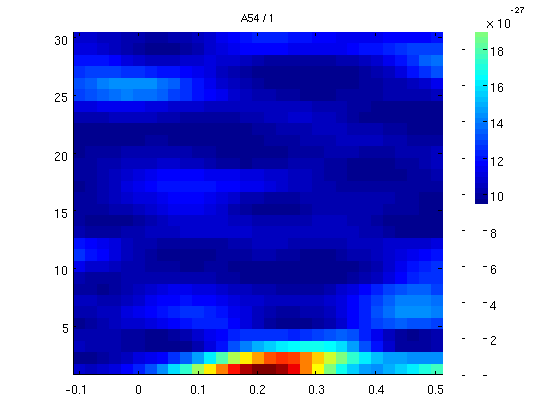
Window size effect
now a window with smaller size for smaller frequencies we start with a window length of 1 cycle for every frequency
cfgtfr.t_ftimwin = 1./cfgtfr.foi; % 1 cycle per window
TFtest = ft_freqanalysis(cfgtfr, datacln);
figure;ft_singleplotTFR([], TFtest);
selecting 1 trials selecting 1 trials the call to "ft_freqanalysis" took 0 seconds and an estimated 0 MB the call to "ft_singleplotTFR" took 0 seconds and an estimated 0 MB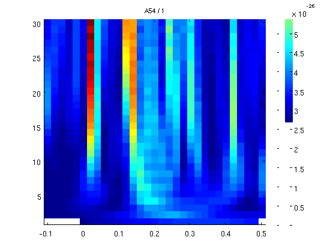
3 cycles per windows
we now move to 3 cycles per window (10Hz will be tested with a sliding window of 30ms. more cycles - smoother results but you loose low freqs.
cfgtfr.t_ftimwin = 3./cfgtfr.foi; % 1 cycle per window
TFtest = ft_freqanalysis(cfgtfr, datacln);
figure;ft_singleplotTFR([], TFtest);
selecting 1 trials selecting 1 trials the call to "ft_freqanalysis" took 0 seconds and an estimated 0 MB the call to "ft_singleplotTFR" took 0 seconds and an estimated 0 MB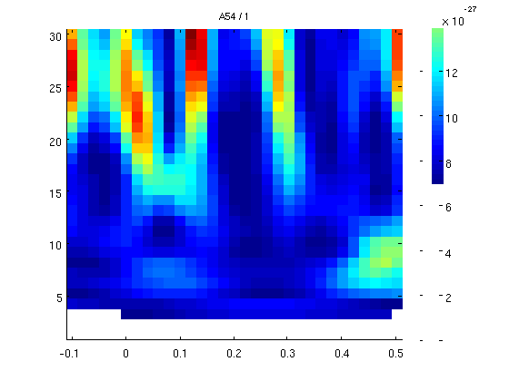
7 cycles per windows
cfgtfr.t_ftimwin = 7./cfgtfr.foi; % 1 cycle per window
TFtest = ft_freqanalysis(cfgtfr, datacln);
figure;ft_singleplotTFR([], TFtest);
selecting 1 trials selecting 1 trials the call to "ft_freqanalysis" took 0 seconds and an estimated 0 MB the call to "ft_singleplotTFR" took 0 seconds and an estimated 0 MB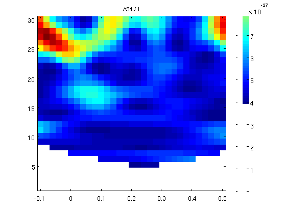
1 cycle, all channels
now we'll do 1 cycle per freq for the whole data and all the channels. it will take a few minutes.
cfgtfr.t_ftimwin = 1./cfgtfr.foi; cfgtfr.trials='all'; cfgtfr.channel='MEG'; cfgtfr.keeptrials='yes'; TFrAll = ft_freqanalysis(cfgtfr, datacln); cfgp = []; %cfgp.ylim = [3 30]; fig1=figure; set(fig1,'Position',[0,0,800,800]); cfgp.layout = '4D248.lay'; cfgp.interactive='yes'; ft_multiplotTFR(cfgp, TFrAll);
the call to "ft_freqanalysis" took 77 seconds and an estimated 253 MB the input is freq data with 248 channels, 30 frequencybins and 31 timebins the call to "ft_freqdescriptives" took 0 seconds and an estimated 252 MB reading layout from file 4D248.lay the call to "ft_prepare_layout" took 0 seconds and an estimated 252 MB Warning: (one of the) axis is/are not evenly spaced, but plots are made as if axis are linear the call to "ft_multiplotTFR" took 1 seconds and an estimated 252 MB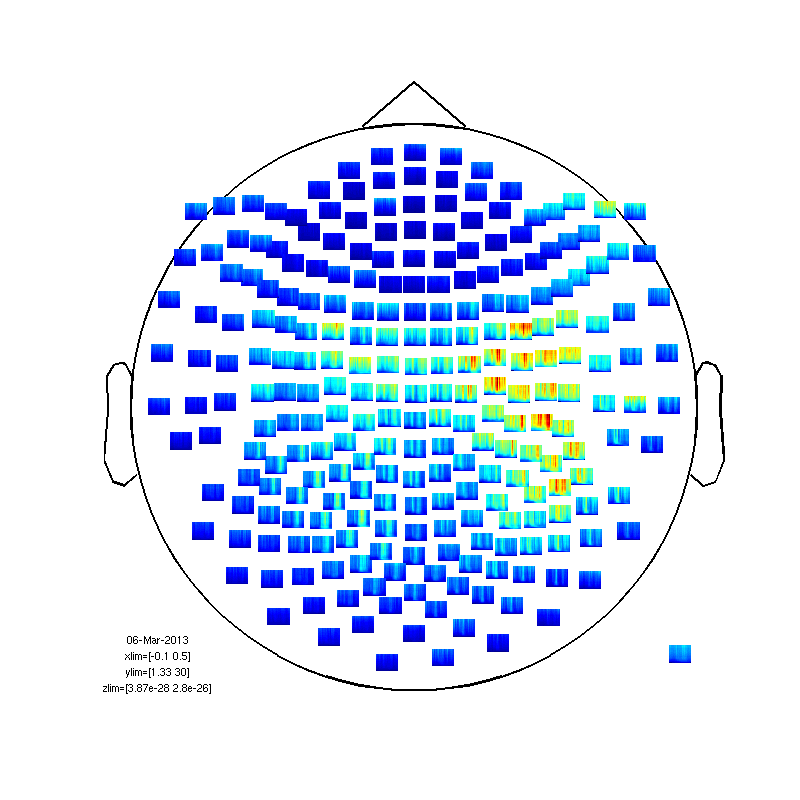
Normalization
a bit messy. needs some normalization.
fig2=figure; set(fig2,'Position',[0,0,800,800]); cfgp.baseline=[-0.5 0]; cfgp.baselinetype = 'relative'; %or 'absolute' ft_multiplotTFR(cfgp, TFrAll);
the input is freq data with 248 channels, 30 frequencybins and 31 timebins the call to "ft_freqdescriptives" took 0 seconds and an estimated 0 MB reading layout from file 4D248.lay the call to "ft_prepare_layout" took 0 seconds and an estimated 0 MB the input is freq data with 248 channels, 30 frequencybins and 31 timebins the call to "ft_freqbaseline" took 0 seconds and an estimated 0 MB Warning: (one of the) axis is/are not evenly spaced, but plots are made as if axis are linear the call to "ft_multiplotTFR" took 1 seconds and an estimated 0 MB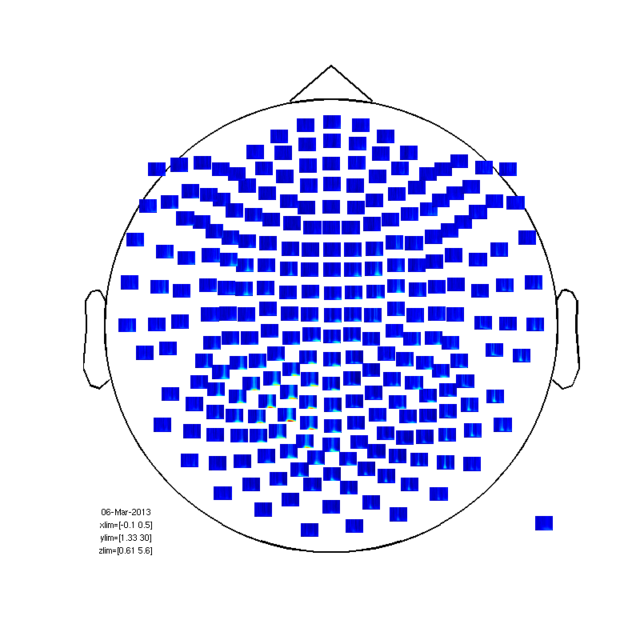
within subject (between trials) statistics.
first baseline correction
baseline=mean(TFrAll.powspctrm(:,:,:,1:6),4); for timei=2:31; TFrAll.powspctrm(:,:,:,timei)=TFrAll.powspctrm(:,:,:,timei)-baseline; end % no compute the statistic cfg=[]; cfg.method='stats'; nsubj=size(TFrAll.powspctrm,1); cfg.design(1,:) = [ones(1,nsubj)]; cfg.latency = [0 0.35]; cfg.frequency = [1 20]; cfg.statistic = 'ttest'; % compares the mean to zero cfg.feedback='no'; frstat=ft_freqstatistics(cfg,TFrAll); % now plot 1-probability (1 = sig, less than 0.95 not sig) cfg=[]; cfg.layout='4D248.lay'; frstat.powspctrm=1-frstat.prob; cfg.zlim=[0.999 1] cfg.interactive='yes'; fig3=figure; set(fig3,'Position',[0,0,800,800]); ft_multiplotTFR(cfg, frstat);
computing statistic over the frequency range [1.333 20.000]
computing statistic over the time range [0.000 0.350]
selection powspctrm along dimension 2
selection powspctrm along dimension 3
selection powspctrm along dimension 4
using "statistics_stats" for the statistical testing
number of observations 94240
number of replications 144
the call to "ft_freqstatistics" took 27 seconds and an estimated 207 MB
cfg =
layout: '4D248.lay'
zlim: [0.9990 1]
reading layout from file 4D248.lay
the call to "ft_prepare_layout" took 0 seconds and an estimated 207 MB
Warning: (one of the) axis is/are not evenly spaced, but plots are made as if axis are linear
the call to "ft_multiplotTFR" took 1 seconds and an estimated 207 MB
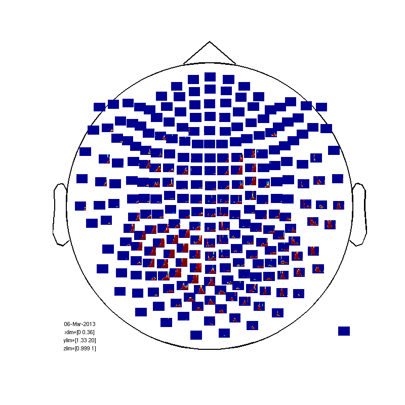